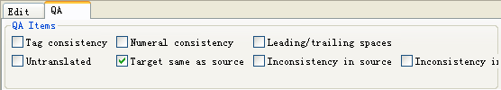
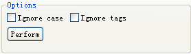
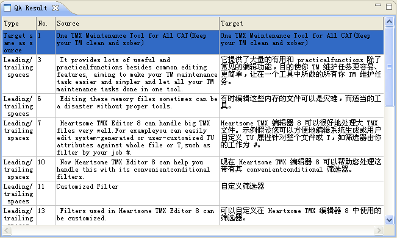

Heartsome TMX Editor 8 provides you with QA functionality for TMX files by generating a QA report and allowing you to edit TMX files based on QA results.
Heartsome TMX Editor 8 now provides six QA check options in QA view:

Tag consistency: This checks whether there are the same number of tags in the source as in the translation.
Numeral consistency: This checks whether the numerals in the source also exist in the translation.
Leading/trailing spaces: This checks whether the spaces at the beginning/end of the source text also appear in the translation.
Untranslated: There checks whether there are any untranslated segments.
Target same as source: This checks whether the translated text is the same as the source.
Inconsistency in target: This checks whether there are multiple segments with the same source text but with different translations.
Inconsistency in source:This checks whether there are multiple segments with the same translated text but with different source text.
1. When selecting QA items to check, you may also check Ignore case and Ignore tags.

2. Click the Perform button. The software will open the QA results view.

When you double-click any error message in the QA results, you will be automatically taken to the corresponding row in the Editor, then you can correct the error in this row.